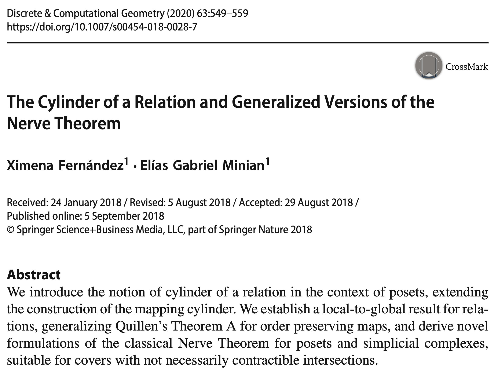
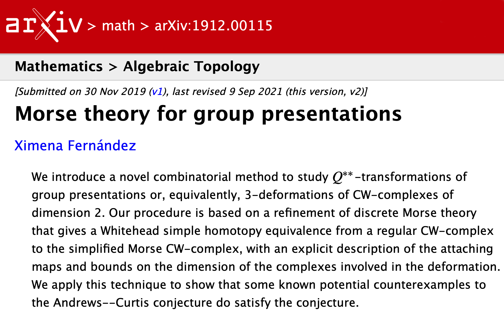
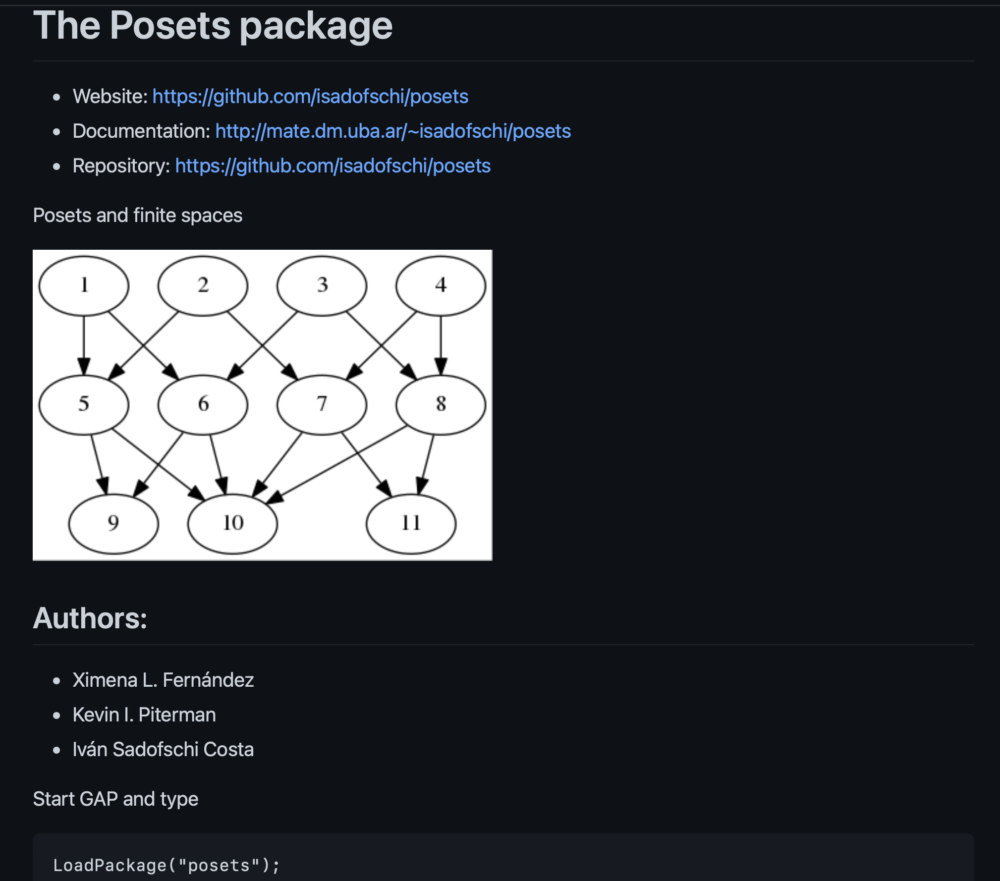
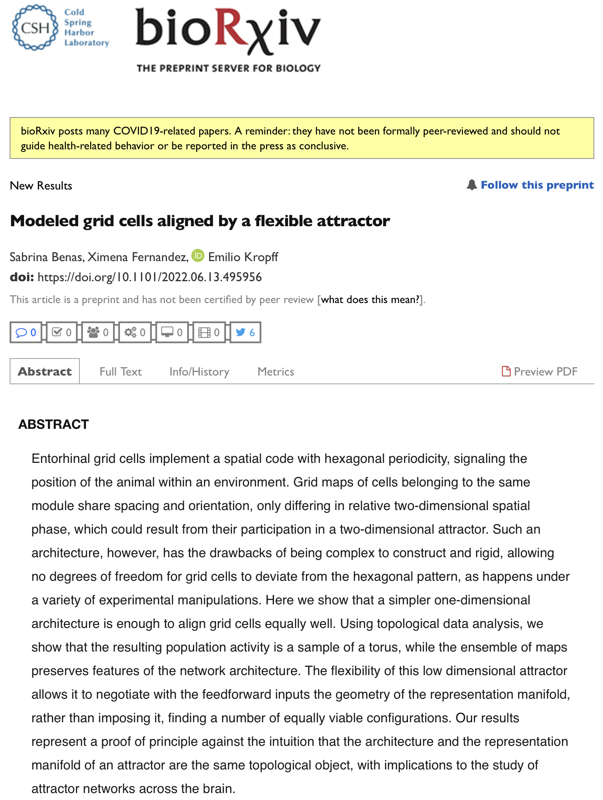

My research
XIMENA FERNANDEZ
University of Oxford
UK CENTRE FOR TOPOLOGICAL DATA ANALYSIS
1. Combinatorial methods and algorithms
in low-dimensional topology
The Andrews-Curtis Conjecture
1. Combinatorial methods and algorithms
in low-dimensional topology



To appear in Transactions of The Amer. Math. Soc.
1. Combinatorial methods and algorithms
in low-dimensional topology


2. Density-based geometric inference and persistent homology
Fermat Distance
3. Applications
Time-series analysis
2. Topological Methods in Neuroscience
Neural connectivity of grid cells
Experimental analysis [Moser & Moser et.al (2005)]

Physical model [Kropff & Treves (2008)]

The total field received by the grid cell $i$ at time $t$ is \[h_i(t) = \sum_{j=1}^{N_{I}}W^I_{ij}(t)r_j^I(t) + \sum_{k=1}^{N_{EC}}W^{EC}_{ik}r_k^{EC}(t) \]
Conjecture: The geometry of the population activity of a module of grid cells determines the neural network connectivity.
We gave a negative answer to the conjecture for modeled grid cells.
2. Topological Methods in Neuroscience
Biomarkers in epilepsy

2. Topological Methods in Neuroscience
Biomarkers in epilepsy
- Let $X_1, X_2, \dots X_N:[0,T]\to \mathbb{R}$ a set of signals.
- Given a window size $W$, we compute for every $t\in [W,T]$ the embedding of $X_1, X_2, \dots X_N:[t-W, t]\to \mathbb{R}$ in $\mathbb{R}^N$.
2. Topological Methods in Neuroscience
Biomarkers in epilepsy
- Let $X_1, X_2, \dots X_N:[0,T]\to \mathbb{R}$ a set of signals.
- Given a window size $W$, we compute for every $t\in [W,T]$ the embedding of $X_1, X_2, \dots X_N:[t-W, t]\to \mathbb{R}$ in $\mathbb{R}^N$.
- We compute the (persistent) homology of the time evolving sliding window embedding.
- Compute derivative of the path of persistence diagrams.
2. Topological Methods in Neuroscience
Biomarkers in epilepsy
- Let $X_1, X_2, \dots X_N:[0,T]\to \mathbb{R}$ a set of signals.
- Given a window size $W$, we compute for every $t\in [W,T]$ the embedding of $X_1, X_2, \dots X_N:[t-W, t]\to \mathbb{R}$ in $\mathbb{R}^N$.
- We compute the (persistent) homology of the time evolving sliding window embedding.
- Estimate the derivative of the path of persistence diagrams.

3. Algebraic topology of Kuramoto Oscillators
My Research work
Ongoing projects
-
Persistent fundamental group of point clouds
(with K. Piterman, Malburg University) -
Dimensionality reduction of Riemannian manifolds via quotients
(with L. Zhang, Imperial College of London) -
Dynamics of network oscillatory systems from a topological perspective, with applications in Alzheimer disease
(with C. Alexandersen and T. Thompson, Oxford University) - Open to new applied projects!